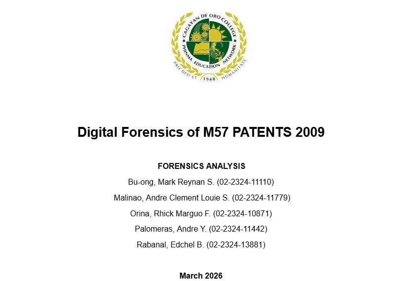
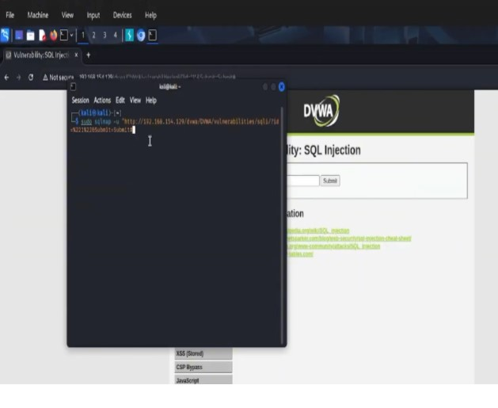
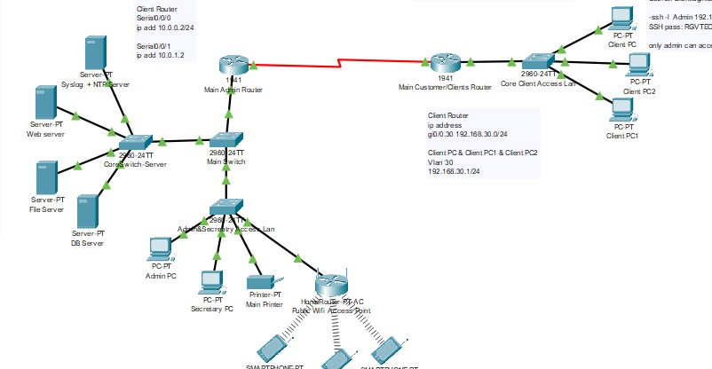

IT STUDENT · CYBERSECURITY & NETWORKING
I'm Andre Y. Palomeras, a 4th-year Information Technology student exploring cybersecurity, digital forensics, and secure network design through hands-on academic projects.
WHAT I'M WORKING ON
My current focus areas are grounded in practical coursework, guided lab exercises, and team projects.
Configuring IP addressing, connecting devices, and designing segmented network topologies for academic projects.
Practicing web application security testing in a controlled lab and learning to recognize common security weaknesses.
Using Autopsy in an academic case analysis to inspect disk-image artifacts and practice forensic investigation.
SELECTED ACADEMIC WORK
A few examples of how I apply what I learn to realistic security and infrastructure challenges.
Conducted an academic investigation of the M57 Patents disk image with Autopsy, examining system artifacts and practicing file recovery techniques.

Used SQLmap in a controlled academic lab against a deliberately vulnerable web application to understand SQL injection risks and assess database exposure.

Designed a segmented network topology for a capstone project, with attention to secure communication and organized traffic flow.

A LITTLE ABOUT ME
I’m Andre Y. Palomeras, a 4th-year Information Technology student at PHINMA COC. My studies have led me to explore networking, cybersecurity, and digital forensics through practical class and capstone projects.
I’m early in my career and eager to keep learning, contribute to a security-minded team, and grow through real-world experience.
View my resumeLET'S CONNECT
Cagayan de Oro, Philippines